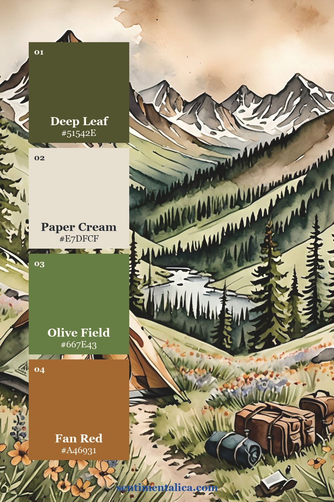
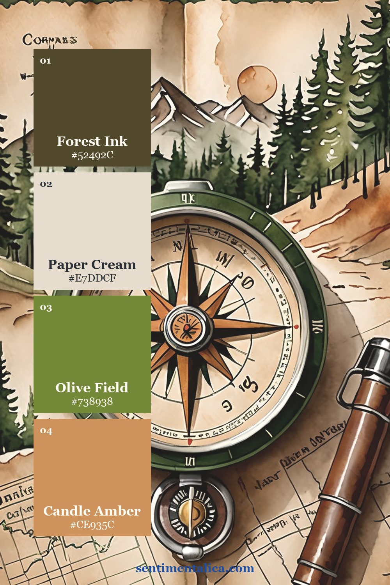
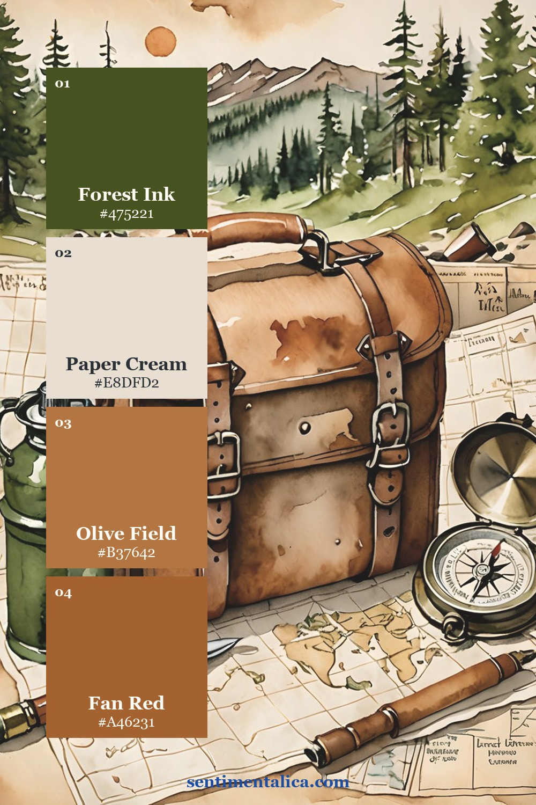
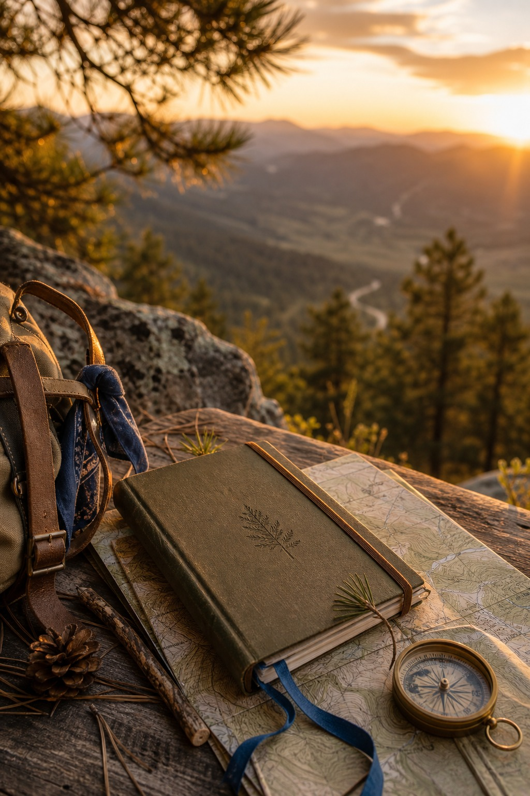
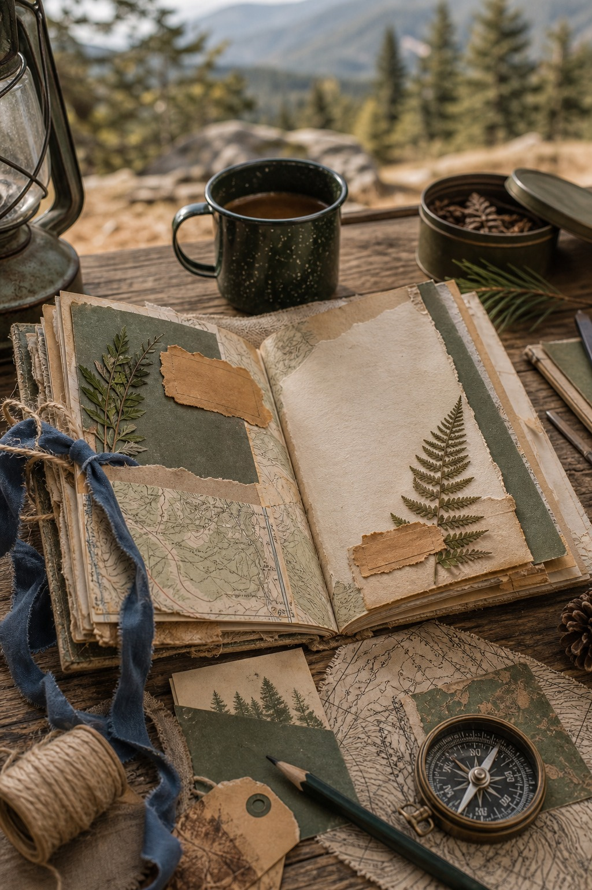
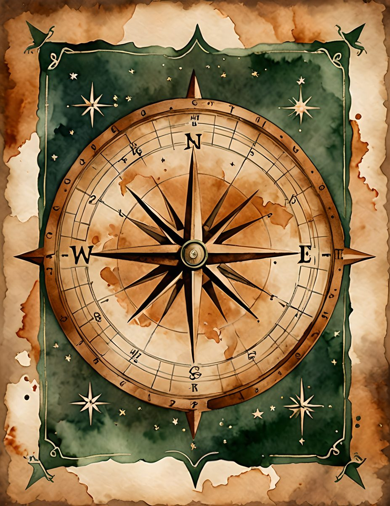
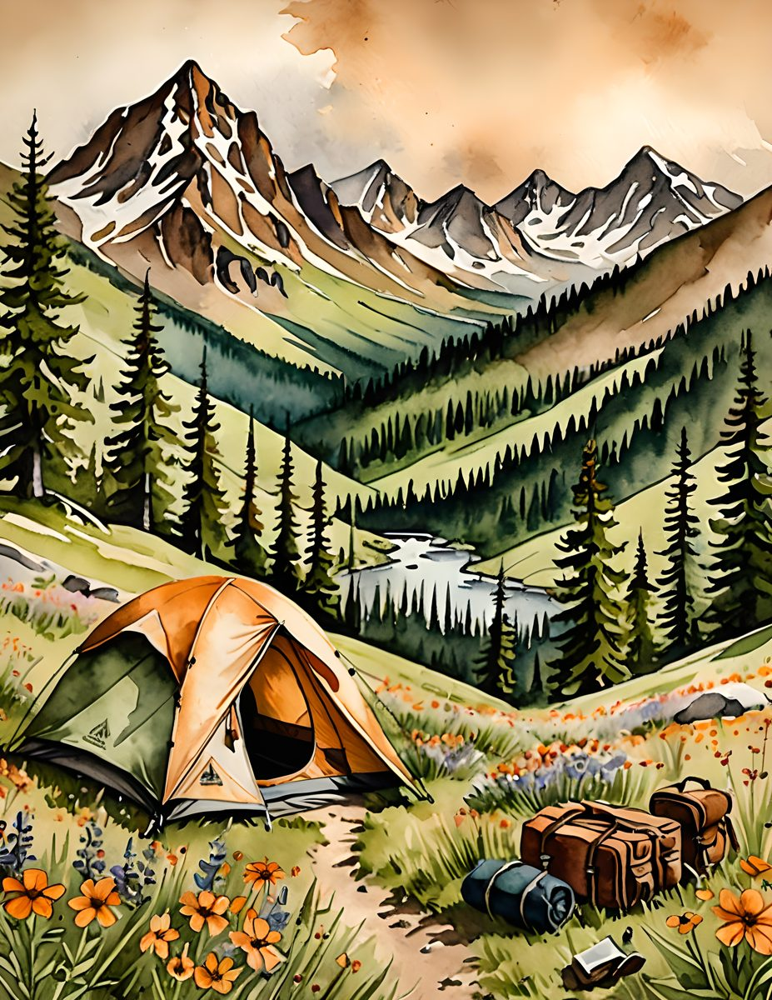
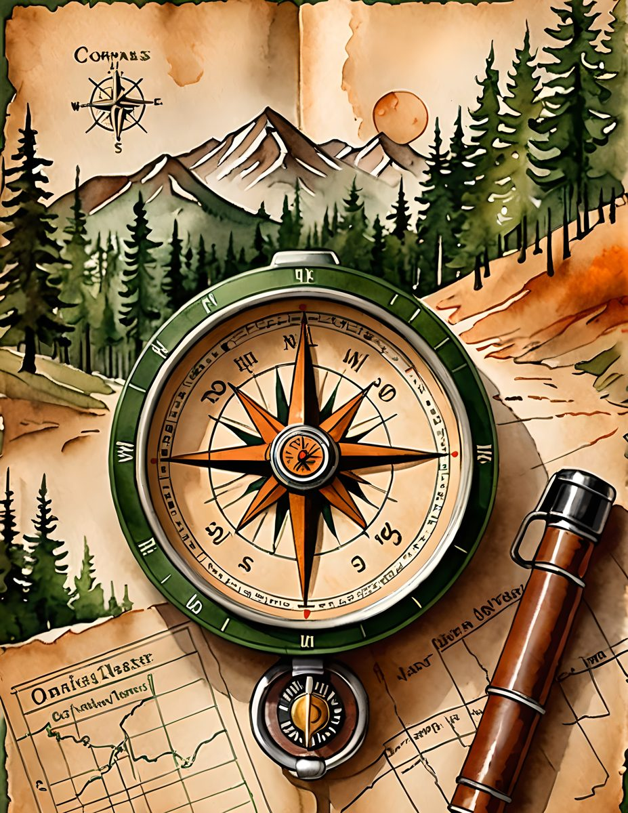

For summer trail pages, the best palette is practical: pine green, map cream, compass brown, and a little warm sky. It should feel like a day outside, but still leave enough quiet paper for writing.

The compass palette is your structure. Put it near the top of a page, then build around it with map scraps and one handwritten route or memory. It makes even a simple spread feel planned.

The campsite page is the story piece. Use it for the emotional center: what the air felt like, what you packed, the view you kept looking back at. Keep the supporting colors earthy so the tent and flowers stay special.

The travel-bag palette is warmer and more tactile. It is perfect for pockets, tags, and little lists: what to bring, what to remember, where to go next. Save this palette for pages that need movement.

Make it feel lived-in
The beautiful part is the repetition. Pick five colors from one page, then repeat them in tiny places: a tab, a thread, a torn edge, a sticker, a date label. The page starts to feel designed because the colors keep answering each other.

Real pages to start from
The Trail Maps pages make a strong base for summer travel journals, camping memories, and outdoorsy scrapbook spreads. Use one hero page, then echo its colors in your scraps.



For more color inspiration, browse the full Sentimentalica journal archive and save the palette idea you want to try next.